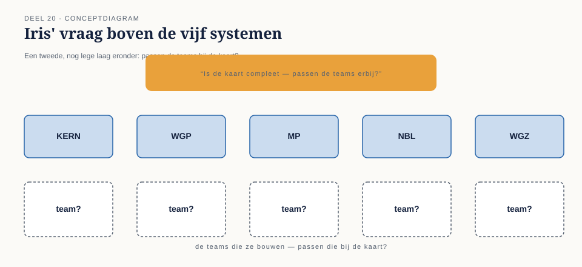
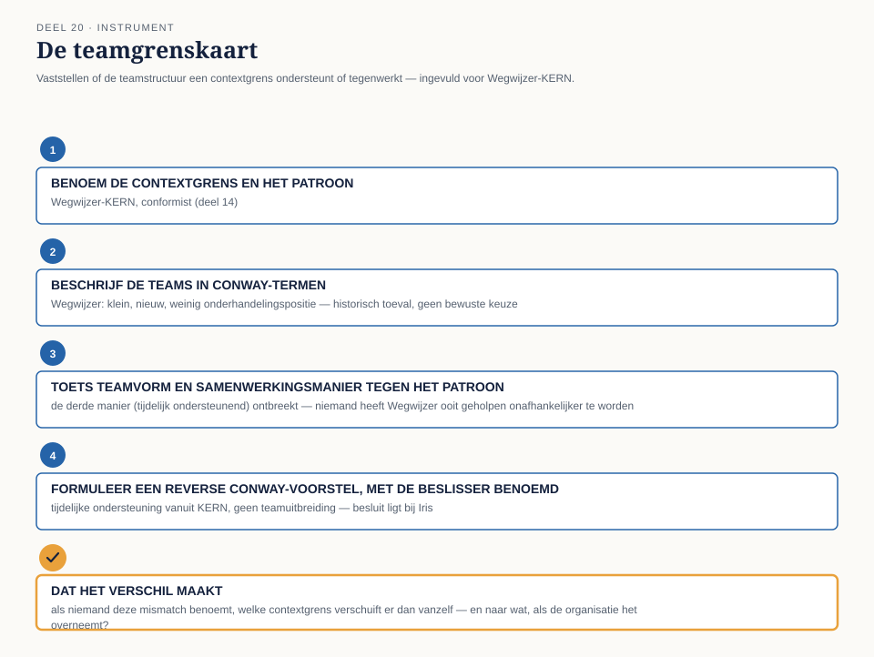

Deel 20 — Bounded contexts en teams: Conway’s Law en teamtopologieën
Reader · Ductus-cursus Domain-Driven Design · niveau 2 (professional) · deel 20 van 30 · zelfstandig leesbaar
Voor wie dit deel los volgt. Meridiaan Pensioen is een Nederlandse pensioenuitvoerder met vijf systemen die nooit gezamenlijk in kaart zijn gebracht: KERN (het kernsysteem, polisadministratie), het Werkgeversportaal (waarlangs werkgevers mutaties doorgeven), het nog te bouwen Mutatieplatform (dat mutaties uit de andere systemen moet valideren en doorzetten), het Nabestaandenloket (klein, recent, goed afgebakend) en Wegwijzer (het deelnemersportaal, dat alleen toont). Een team onder leiding van domeinmodelleur Daan Kuiper heeft, onder druk van een naderende wetswijziging, een context map van dat landschap opgeleverd: acht relaties tussen de vijf systemen, elk met een eigen patroon dat vastlegt hoe de twee kanten zich tot elkaar verhouden. Dit deel stelt de vraag die na zo’n kaart onvermijdelijk volgt: kloppen die grenzen ook met hoe de mensen die de systemen bouwen, georganiseerd zijn — of werken de teams de kaart juist tegen? Je hebt niets van de rest van de cursus nodig om dit deel te volgen.
20.1 Waar dit deel over gaat
Een bounded context is, in alle voorgaande delen van deze cursus, een uitspraak over een model: waar één ubiquitous language geldt, waar één set aggregates zijn invarianten bewaakt, waar één architectuurpatroon een grens technisch beschermt. Dit deel voegt daar een laag aan toe die net zo bepalend is, en die in de meeste DDD-trajecten pas wordt ontdekt nadat de pijn al is geleden: een bounded context wordt niet alleen door een model gedragen, maar ook door een team. En teams hebben een eigen realiteit — wie aan wie rapporteert, wie met wie in één stand-up zit, wie een ticket bij een ander team moet indienen om iets gedaan te krijgen — die zich niet automatisch naar de grenzen van een context map voegt.
Conway’s Law legt het verband tussen die twee realiteiten bloot: de structuur van een systeem gaat, ongeacht wat er op een ontwerptekening staat, de structuur van de organisatie weerspiegelen die het bouwt. Teamtopologieën — een manier van denken over teamvormen en de communicatie daartussen die zich de afgelopen jaren in de software-industrie heeft gevestigd — geeft daar een praktisch antwoord op: een klein aantal herkenbare teamvormen, en een klein aantal manieren waarop teams met elkaar mogen samenwerken, gekozen op basis van wat een grens nodig heeft in plaats van op basis van hoe de organisatie er toevallig al uitziet.
Dit deel is, conform het familiemodel, zelfstandig leesbaar en los aanbiedbaar: de boodschap “bounded contexts zijn ook een organisatievraagstuk” is op zichzelf de moeite waard voor elk team dat herkent dat het net een reorganisatie achter de rug heeft, of er middenin zit. Voor wie de rest van deze cursus volgt, bouwt het inhoudelijk gewoon voort op de context map en de architectuurkeuzes uit deel 11 tot en met 19.
Aan het eind van dit deel kun je:
- Conway’s Law uitleggen en herkennen in een bestaand landschap: waar verklaart de communicatiestructuur van een organisatie waarom een systeemgrens ligt waar hij ligt, ook als die grens niet de beste grens voor het domein is;
- de vier teamvormen en de drie manieren waarop teams met elkaar samenwerken beschrijven, en per bounded context beredeneren welke combinatie daar past;
- de reverse Conway-manoeuvre uitleggen: een organisatie bewust herinrichten om een gewenste architectuur te laten ontstaan, in plaats van de architectuur passief te laten volgen op de bestaande organisatie;
- met de teamgrenskaart voor een bounded context vaststellen of de teamstructuur de contextgrens ondersteunt of tegenwerkt, en wat dat betekent voor wie het moet oplossen.
20.2 De casus: Iris’ vraag blijft hangen
Uit het casusdossier, vervolgd: deel 19 eindigde met een vraag van Iris Tanghe die niemand in het team meteen kon beantwoorden.
“Kiezen jullie deze architecturen om het domein, of om hoe mijn teams nu toevallig zijn ingericht?” Iris stelde de vraag aan het eind van dagdeel B van deel 19, na Karstens verdediging van een eenvoudige, gelaagde architectuur voor het Werkgeversportaal — een keuze die Karsten zelf onderbouwde met het argument dat zijn team klein is en weinig ruimte heeft voor complexiteit. Twee weken later, bij de start van dit deel, opent Iris de sessie zelf, wat ze niet vaak doet.
“Ik heb erover nagedacht, en ik denk dat ik het antwoord niet leuk vind,” zegt ze. “Toen ik het Programma Mutatieplatform opzette, heb ik de teams ingedeeld op basis van wie er toen vrij was en wie waar al ervaring mee had — niet op basis van de context map die er toen nog niet was. Karsten kreeg een klein team omdat er nu eenmaal weinig mensen over waren na WGP 2.0. Vera’s team is groot omdat KERN altijd al groot was. Niemand heeft ooit gevraagd of die indeling paste bij de grenzen die Daans team uiteindelijk zou tekenen.”
Daan herkent meteen waar dit naartoe gaat. “Dus de vraag is niet alleen: is onze context map goed. De vraag is ook: kunnen de teams zoals ze nu zijn ingericht, die kaart eigenlijk wel volgen — of gaat de organisatie, zonder dat iemand het besluit, iets anders bouwen dan wat er op de kaart staat?”
Foppe, die tot nu toe vooral over modellen sprak, bevestigt dat dit een bekend patroon is, met een naam die ouder is dan DDD zelf. “Er is een uitspraak uit de jaren zestig die precies dit beschrijft. Voordat we naar teamvormen kijken, wil ik die eerst op tafel leggen — want zonder dat uitgangspunt is elke teamindeling die we vandaag bedenken, giswerk.”

20.3 Conway’s Law: waarom een systeem de organisatie weerspiegelt
Conway’s Law, genoemd naar de informaticus die de waarneming in 1968 publiceerde, stelt dat elke organisatie die een systeem ontwerpt, onvermijdelijk een systeem oplevert waarvan de structuur een kopie is van de communicatiestructuur van die organisatie. De redenering erachter is niet mystiek maar mechanisch: een ontwerpbeslissing die twee onderdelen van een systeem raakt, vereist afstemming tussen de mensen die die onderdelen bouwen. Waar die afstemming gemakkelijk is — binnen één team, in dezelfde ruimte, met een gedeeld doel — ontstaat een naadloze koppeling. Waar die afstemming moeizaam is — tussen twee teams die zelden overleggen, met verschillende prioriteiten, via een ticket in plaats van een gesprek — ontstaat vanzelf een grens, ongeacht of het domein daar een grens rechtvaardigt.
Dat is de kern van waarom dit relevant is voor bounded contexts. Een bounded context is, in theorie, een grens die je trekt op basis van het domein: waar één taal geldt, waar één model consistent moet zijn. Conway’s Law zegt dat je die grens niet vrij kunt trekken zonder rekening te houden met wie hem moet bouwen en onderhouden — een grens die dwars door een bestaand team snijdt, of die twee teams dwingt tot dagelijkse, fijnmazige afstemming, zal onder druk van de dagelijkse werkelijkheid verschuiven naar waar de communicatie al gemakkelijk is, ook als dat niet de grens is die het domein zou kiezen.
Vera formuleert het scherp vanuit haar eigen ervaring met KERN. “Ik heb veertien jaar geleden nooit besloten dat KERN alles zou bevatten wat het nu bevat. Maar elk team dat ooit een uitbreiding nodig had en geen zin had om een ander team erbij te betrekken, heeft het gewoon aan KERN toegevoegd — omdat wij toegankelijk waren, omdat ons team er al zat, omdat het sneller ging dan een nieuw team optuigen. Conway’s Law heeft KERN groter gemaakt dan enig domeinontwerp ooit zou hebben voorgesteld.”
Wat Conway’s Law niet zegt. Het is geen wet die voorschrijft hoe een systeem hoort te zijn — het beschrijft alleen wat er gebeurt, ongestuurd. Precies daarom is de wet zowel een waarschuwing als een instrument: een waarschuwing omdat een organisatiestructuur die niet bewust op de gewenste contextgrenzen is afgestemd, die grenzen langzaam zal uithollen; een instrument omdat je, door de organisatie bewust te veranderen, de architectuur in de gewenste richting kunt duwen in plaats van erachteraan te lopen. Dat tweede punt komt in §20.7 terug.

20.4 Het landschap tegen het licht van Conway’s Law
Daan stelt voor om de vier teams achter de vier belangrijkste systemen — behalve het Nabestaandenloket, dat al in niveau 1 als uitzondering is behandeld — één voor één langs Conway’s Law te leggen, om te zien waar de wet verklaart waarom een grens is zoals hij is, los van wat het domein zou willen.
Vera en KERN. Het team rond KERN is groot, zit al jaren samen, en is voor bijna elk ander team de gemakkelijkste plek om iets bij onder te brengen — precies zoals §20.3 beschrijft. Dat verklaart, met terugwerkende kracht, waarom de shared kernel-relatie tussen KERN en het Mutatieplatform (deel 13) zo lastig was om scherp te krijgen: KERN heeft nooit geleerd nee te zeggen tegen een uitbreidingsverzoek, omdat de organisatie nooit een andere plek bood waar zo’n verzoek naartoe kon. De contextgrens die het team in deel 13 tekende, is een grens die het domein rechtvaardigt — maar de organisatie rond KERN heeft veertien jaar lang het tegenovergestelde gedrag beloond.
Karsten en het Werkgeversportaal. Het kleine team rond het Werkgeversportaal is een direct gevolg van de stopzetting van WGP 2.0: er bleven weinig mensen over, en niemand heeft die keuze ooit heroverwogen in het licht van wat het portaal nu, binnen het Programma Mutatieplatform, aan afstemming nodig heeft met het Mutatieplatform-team (de partnership-relatie uit deel 13). Karsten herkent het patroon zodra Daan het benoemt: “Wij zijn klein gebleven omdat niemand ooit expliciet besloot dat we groter moesten. Dat is precies waarom ik in deel 19 voor de eenvoudigste architectuur koos — niet omdat het domein dat vroeg, maar omdat mijn team de complexiteit van iets anders niet aankan. Conway’s Law, in mijn eigen woorden: mijn architectuur volgt mijn teamgrootte, niet andersom.”
Otto en het Mutatieplatform. Het team rond het nog te bouwen Mutatieplatform is nieuw, klein, en moet volgens de context map met vier andere systemen relaties onderhouden — een partnership met het Werkgeversportaal, een shared kernel met KERN, een customer/supplier-relatie met het Nabestaandenloket, en een open host service richting Wegwijzer. Otto benoemt het risico dat daaruit volgt: “Wij zijn het team met de meeste koppelvlakken en de minste geschiedenis. Als Conway’s Law klopt, gaat de druk op ons team ertoe leiden dat we ergens een bocht afsnijden — waarschijnlijk bij de relatie waar de andere partij het makkelijkst voor ons is om te negeren, niet bij de relatie die het domein het minst belangrijk vindt.”
Priya en Wegwijzer. Het team achter Wegwijzer is klein, relatief nieuw bij Meridiaan, en heeft — zoals in deel 14 al bleek uit de conformist-relatie met KERN — tot nu toe simpelweg overgenomen wat KERN aanlevert. Priya trekt de lijn door: “Wij zijn niet conformist geworden omdat dat de beste keuze voor ons domein was. We zijn conformist geworden omdat wij het kleinste, nieuwste team zijn, en KERN het team met de meeste tijd en ervaring om het gesprek naar zich toe te trekken. Conway’s Law verklaart onze contextgrens beter dan ons domein dat doet.”
Daan vat de ronde samen: “Bij alle vier zien we hetzelfde patroon. We hebben in deel 11 tot en met 14 grenzen getekend die, achteraf bekeken, meer verklaard worden door wie welk team was en hoe groot dat team was, dan door wat het domein vroeg. Dat betekent niet dat onze context map fout is — het betekent dat we, om die kaart overeind te houden, ook naar de teams zelf moeten kijken.”

20.5 Teamtopologieën: vier vormen, drie manieren van samenwerken
Als Conway’s Law het probleem blootlegt, biedt teamtopologieën een manier om er doelbewust mee om te gaan: in plaats van teams te laten groeien of krimpen op toeval — zoals bij Karsten na WGP 2.0, of bij KERN over veertien jaar — kies je bewust welke vorm een team heeft, gegeven wat de bounded context die het team draagt, nodig heeft.
Vier teamvormen. De eerste vorm is het team dat een doorlopende stroom van waarde naar een gebruiker of afnemer levert, van begin tot eind, zonder voortdurend op een ander team te hoeven wachten — in het landschap is het Nabestaandenloket-team, dat zelfstandig overlijdensmeldingen ontvangt en recht vaststelt, de duidelijkste vertegenwoordiger van deze vorm. De tweede vorm is het team dat een herbruikbare, zelfbedieningsvoorziening levert waar andere teams op leunen zonder er zelf verstand van te hoeven hebben — een team dat bijvoorbeeld een gedeelde infrastructuurvoorziening beheert, zodat geen van de vijf systeemteams zelf hoeft uit te zoeken hoe een bepaald technisch probleem opgelost wordt. De derde vorm is het team dat zich specifiek richt op het tijdelijk versterken van andere teams — kennis, vaardigheden of methodiek overdragen zonder het werk zelf over te nemen. Foppe’s eigen rol in het contextmap-team is hier het duidelijkste voorbeeld: hij begeleidt EventStorming, example mapping en context mapping, maar maakt zelf geen enkele inhoudelijke keuze over het Meridiaan-domein. De vierde vorm is het team dat verantwoordelijk is voor een onderdeel dat zo veel gespecialiseerde kennis vraagt dat het niet redelijk is om die kennis van elk ander team te verwachten — een cryptografisch component, een zwaar wiskundig rekenmodel. In het Meridiaan-landschap is dat, zo stelt het team vast, het deel van KERN dat de actuariële berekeningen uitvoert: niemand buiten dat kleine specialistenteam hoeft — of kan redelijkerwijs — die rekenregels zelf beheersen.
Otto vat de vier vormen samen in zijn eigen woorden: “Een team dat zelf iets aflevert. Een team dat een voorziening biedt waar een ander op leunt. Een team dat een ander team tijdelijk beter maakt. En een team dat iets zo specialistisch bewaakt dat niemand anders het hoeft te snappen.”
Drie manieren van samenwerken. Naast de vier vormen is er een even belangrijke keuze: hoe twee teams met elkaar omgaan, en die keuze hoort — dat is de crux — bewust gemaakt te worden, niet te ontstaan. De eerste manier is intensieve, tijdelijke samenwerking: twee teams werken een periode nauw samen om iets gezamenlijk uit te vinden, met veel overleg en gedeelde verantwoordelijkheid, tot het punt waarop de aanpak duidelijk genoeg is om weer uit elkaar te gaan. De tweede manier is dat het ene team het andere behandelt als een dienst: een duidelijk, gedocumenteerd aanbod met een eigen tempo van vernieuwing, waar het afnemende team op vertrouwt zonder in te hoeven grijpen in hoe het tot stand komt. De derde manier is dat het ene team het andere tijdelijk helpt een vaardigheid of een aanpak eigen te maken, met als doel dat de hulp op een gegeven moment overbodig wordt.
Vera herkent de drie manieren onmiddellijk in de context-mappingpatronen die het team al kende. “Dit is bijna hetzelfde onderscheid als in deel 13 en 14 — alleen dan over teams in plaats van over modellen. Een partnership tussen twee systemen vraagt intensieve samenwerking tussen de teams erachter. Een open host service, zoals bij het Mutatieplatform richting Wegwijzer, vraagt dat het ene team het andere als een dienst behandelt. En een conformist-relatie, zoals bij Wegwijzer richting KERN, is eigenlijk het ontbreken van de derde manier: niemand heeft Wegwijzer ooit geholpen om onafhankelijker te worden.”
Foppe bevestigt de parallel, en waarschuwt tegelijk voor de valkuil erin. “De parallel klopt, en dat is precies waarom dit deel bestaat: een contextgrens en een teamgrens zouden hetzelfde verhaal moeten vertellen. Maar ze doen dat alleen als iemand ze bewust naast elkaar legt — zoals wij nu doen. Zonder die stap groeien ze uit elkaar, op precies de manier die Conway’s Law voorspelt.”

20.6 De reverse Conway-manoeuvre: de organisatie bewust sturen
Waar §20.3 Conway’s Law beschrijft als iets dat ongestuurd gebeurt, keert de reverse Conway-manoeuvre de logica bewust om: als de structuur van een organisatie de structuur van het systeem gaat bepalen, kun je een gewenste systeemarchitectuur dichterbij brengen door eerst de organisatie ernaar in te richten, in plaats van te wachten tot de architectuur er vanzelf naar toe groeit — of, zoals bij KERN, er juist vanaf groeit.
Dat klinkt eenvoudiger dan het is, en Iris is de eerste die de consequentie voluit benoemt. “Als ik Karstens team groter maak omdat de partnership met het Mutatieplatform dat vraagt, kost dat geld en tijd die ik ergens anders vandaan moet halen. Als ik KERN’s team bewust opknip zodat het niet langer de gemakkelijkste plek is om alles bij onder te brengen, breek ik iets dat al veertien jaar werkt, met alle risico’s van dien. De reverse Conway-manoeuvre is geen gratis inzicht — het is een reorganisatiebesluit met een architectuurmotief, en dat besluit ligt bij mij, niet bij het contextmap-team.”
Daan erkent dat grens expliciet. “Dit team kan laten zien welke teamstructuur bij welke contextgrens past. Wat we niet kunnen — en ook niet zouden moeten willen — is die structuur zelf opleggen. Dat is precies waarom we dit vandaag aan Iris voorleggen, niet als voldongen feit maar als kaart waarmee zij kan beslissen.”
Dat onderscheid — een contextgrens voorstellen is een modelleerbeslissing, een teamstructuur veranderen is een organisatiebesluit — is de reden dat dit deel zich in de reader beperkt tot het herkennen en voorstellen van de spanning tussen kaart en organisatie, en niet doordendert in hoe een reorganisatie zelf wordt uitgevoerd. Wie dat vraagstuk breder wil bestuderen, vindt het in de EA- en PM-cursus (↗), waar organisatieontwerp en belanghebbendenanalyse een eigen vak zijn; hier blijft het instrument beperkt tot wat een domeinmodelleur kan en hoort te leveren: een heldere diagnose, geen reorganisatieplan.

20.7 De werkvorm: de teamgrenskaart
Het instrument van dit deel is de teamgrenskaart: een sjabloon om, voor één relatie uit de context map, vast te stellen of de teamstructuur erachter de contextgrens ondersteunt of tegenwerkt — en, waar dat laatste het geval is, wie welk besluit zou moeten nemen om het verschil te overbruggen.
De vier stappen
Stap 1 — Benoem de contextgrens en het bijbehorende context-mappingpatroon. Welke twee bounded contexts, welk patroon uit deel 13 of 14 (partnership, shared kernel, customer/supplier, conformist, anti-corruption layer, open host service, published language)? Dit is het uitgangspunt: de grens zoals het domein hem vraagt.
Stap 2 — Beschrijf de teams die deze grens moeten dragen, in Conway-termen. Hoeveel mensen, hoe lang bestaat het team al, hoe gemakkelijk of moeizaam is het contact met het team aan de andere kant van de relatie? Ga hierbij expliciet na of de huidige teamgrootte en -samenstelling een historisch toeval is (zoals bij Karsten na WGP 2.0) of een bewuste keuze.
Stap 3 — Toets de teamvorm en de samenwerkingsmanier tegen het patroon uit stap 1. Past de teamvorm (stroomgericht, voorzienend, ondersteunend, specialistisch) bij wat deze bounded context nodig heeft? En sluit de manier waarop de twee teams nu daadwerkelijk samenwerken (intensief en tijdelijk, als dienst, of tijdelijk ondersteunend) aan bij het patroon uit stap 1 — of werkt de teamstructuur het patroon juist tegen, zoals bij Wegwijzer en KERN, waar de conformist-relatie eerder verklaard wordt door teamverschil dan door een bewuste modelkeuze?
Stap 4 — Formuleer, indien nodig, een reverse Conway-voorstel, met de beslisser expliciet benoemd. Als stap 3 een mismatch blootlegt: wat zou er aan de teamstructuur moeten veranderen om de contextgrens weer te laten kloppen met de organisatie — en bij wie ligt dat besluit? Dit is nadrukkelijk een voorstel, geen besluit: de teamgrenskaart levert een onderbouwde diagnose, geen mandaat om de organisatie te herstructureren.
Het veld dat het verschil maakt
Onder de vier stappen staat het afsluitende veld:
Dat het verschil maakt: als niemand deze mismatch benoemt, welke contextgrens verschuift er dan vanzelf — en naar wat, als de organisatie het overneemt in plaats van het domein?
Dit veld dwingt het team om niet te blijven steken bij de constatering “kaart en organisatie komen niet overeen”, maar te voorspellen wat er concreet gebeurt als niemand ingrijpt: welke grens Conway’s Law, ongestuurd, zal laten verschuiven, en in welke richting. Dat is precies het verschil tussen een observatie en een instrument dat het verschil maakt: een teamgrenskaart die dit veld niet overtuigend kan invullen, heeft waarschijnlijk een mismatch benoemd die in de praktijk geen gevolgen heeft — en is dan minder urgent dan hij op het eerste gezicht lijkt.

20.8 Toepassing: de teamgrenskaart op het landschap
Het team vult de teamgrenskaart in voor de vier relaties die in §20.4 al ter sprake kwamen, en legt de uitkomst aan Iris voor.
Voor Wegwijzer-KERN (conformist) is de conclusie het scherpst: de teamgrenskaart laat zien dat de conformist-relatie niet is gekozen omdat het de beste optie voor het domein was, maar omdat Wegwijzer’s team klein, nieuw en zonder onderhandelingspositie is. Priya’s voorstel: geen reverse Conway-manoeuvre die Wegwijzer groter maakt — dat zou volgens haar buiten proportie zijn voor wat het team feitelijk doet — maar een tijdelijke, ondersteunende samenwerking (de derde manier uit §20.5) waarin iemand van KERN’s team Wegwijzer helpt een eigen vertaling van KERN’s begrippen op te zetten, zodat de conformist-relatie een bewuste keuze wordt in plaats van een verzuim. “Als het na die ondersteuning nog steeds conformist is,” zegt Priya, “is dat een besluit. Nu is het een gewoonte.”
Voor KERN-Mutatieplatform (shared kernel) bevestigt de teamgrenskaart wat Vera in deel 13 al vreesde: een shared kernel vraagt de intensiefste samenwerkingsmanier van de drie, en die is er op dit moment niet — KERN’s team is te groot en te druk bezet om de gedeelde discipline op te brengen die een shared kernel vereist. Vera’s voorstel aan Iris is concreet: een klein, vast koppel van mensen uit beide teams, expliciet vrijgemaakt voor dit ene stuk gedeeld model, in plaats van de shared kernel als bijzaak te laten meelopen in de volle agenda van beide teams.
Voor Werkgeversportaal-Mutatieplatform (partnership) bevestigt de kaart Karstens eigen observatie uit §20.4: het team is klein door toeval, niet door ontwerp, terwijl een partnership júist een team vraagt dat ruimte heeft voor intensieve, wederkerige afstemming. Karsten formuleert het voorstel zelf, met zichtbare aarzeling: “Ik wil niet vragen om meer mensen alleen omdat het makkelijker voelt. Maar als ik eerlijk ben: onze architectuurkeuze in deel 19 was zo eenvoudig omdat mijn team klein is, en die kleinte was zelf nooit een bewust besluit. Dat mag Iris weten, ook als het antwoord ‘nee, blijf klein’ is.”
Voor het Mutatieplatform zelf, met zijn vier relaties tegelijk, is de conclusie anders van aard: niet één mismatch, maar een team dat structureel te veel verschillende samenwerkingsmanieren tegelijk moet dragen — intensief met het Werkgeversportaal, gedeeld met KERN, als leverancier richting het Nabestaandenloket, als dienstverlener richting Wegwijzer. Otto’s voorstel is geen teamuitbreiding maar een herverdeling van aandacht: expliciet vastleggen welke relatie op welk moment in de sprint voorrang krijgt, zodat het team niet, onder druk, de relatie met de kleinste weerstand bevoordeelt boven de relatie die het domein het belangrijkst vindt — precies het risico dat Otto in §20.4 al voorspelde.
Iris luistert de vier voorstellen, en reageert niet meteen met een besluit. “Jullie vragen mij niet om een architectuur goed te keuren. Jullie vragen mij om te erkennen dat een deel van de manier waarop ik dit programma heb ingericht, jullie eigen werk tegenwerkt. Dat is een ongemakkelijker gesprek dan ik had verwacht toen ik de vraag stelde.” Ze zegt geen van de vier voorstellen direct toe, maar neemt ze mee als agendapunt voor het volgende stuurgroepoverleg — een uitkomst die Foppe expliciet als winst benoemt: “Een teamgrenskaart die een besluit afdwingt zonder de beslisser de ruimte te geven om na te denken, zou zijn eigen instructie negeren. Dit is precies waar het instrument moet eindigen: bij de juiste vraag, bij de juiste persoon.”

20.9 Terug naar de casus, en vooruit
Dit deel levert geen nieuwe context map op — de kaart uit deel 11 tot en met 14 blijft staan — maar wel een tweede laag eronder: per relatie een uitspraak of de teams die de kaart moeten dragen, haar ook daadwerkelijk kunnen dragen, en waar niet, een voorstel over wie dat zou moeten oplossen. Daan vat het voor zichzelf samen in een aantekening die hij aan het eind van de sessie in zijn eigen woorden opschrijft: “In niveau 1 leerde ik een grens trekken binnen één klein team. Hier leer ik dat een grens tussen vijf systemen niet standhoudt als de vijf teams erachter niet weten, of niet kunnen, wat die grens van ze vraagt.”
Vooruit naar deel 21. De teamgrenskaart heeft, voor vier van de acht relaties uit de context map, een organisatorische diagnose opgeleverd. Wat onbeantwoord blijft, is een vraag die zowel technisch als organisatorisch is: als twee teams — zoals KERN en het Mutatieplatform, of het Mutatieplatform en Wegwijzer — niet permanent intensief kunnen samenwerken, waarlangs bereiken hun systemen elkaar dan wél, zonder dat het ene systeem voortdurend moet wachten op het andere, en zonder dat de teams elkaar dagelijks nodig hebben om iets simpels als “er is iets gebeurd” door te geven? Foppe kondigt aan waar het antwoord vandaan komt: “Jullie hebben in deel 14 de published language al genoemd als patroon. Deel 21 maakt dat concreet: domain events als het middel waarmee systemen — en de teams erachter — elkaar bereiken zonder elkaar voortdurend nodig te hebben.”